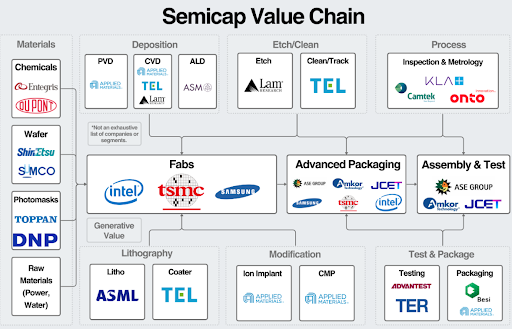

I’m Jordan! Glad to see you at . (Probably) just like you I am an EE major at San Jose State University – class of Fall ‘25. I hope to continue schooling for a Master’s and doctorate degrees; my end goal is to one day make an Analog-based computer to reduce the power usage of AI/ML/LLMs and such.
I took this over my final spring here and never have I been challenged in a way that I feel is special for a class like this. Sure, trying to understand all of the necessities of a (test) engineer role is a lot, but I never had to re-evaluate the answer of what it meant to be an Electrical Engineer that I told myself back when I first applied to SJSU back in 2022. Going to Advantest and seeing one of my future possible workspaces really opened my eyes and I will be forever grateful for that. (Yeah sadly I had no internships up until that point).
That’s why I made this, a quick reference for you to refresh on the fundamentals (yes fundamentals) of Electrical Engineering that your employers expect from you from day one. Also, by going through this, I hope that leaves less moments where Mr. Kim scolds you for not knowing the “stuff for babies” and more time for the “extremely important stuff”.
This class is officially titled “Analog and Mixed-Signal IC Test Development”. What that ultimately means is that this class teaches you the tippy-end of a long and arduous process of creating an integrated circuit. In the labs, you’ll learn how to use automated testing equipment (ATE) to quickly measure the performance of your devices under testing (DUT).
If you would like to know more about manufacturing these devices, I’d recommend taking EE/MatE 129. Here are my final reports if you’d like to see the outcomes of this class: [1] [2]
The lectures, by contrast, will focus more on signal processing topics, akin to EE 110/112. That is because knowing what kind of signal to send, transform, receive, whatever is vital for what you are supposed to test. How do you know if your filters work if you cannot even work between time and frequency domain? How do you know if your sampling process does result in garbage? These are the things you need to know at the back of your brain before you even start your work. In fact, intensive signal processing knowledge is what separates us from the computer engineers.